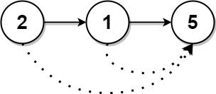
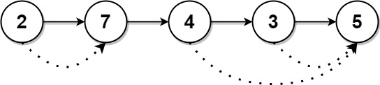

1019. 链表中的下一个更大节点
转成数组从右往左扫，维护「从底到顶递减」的值栈：栈顶就是下一个更大元素，入栈前把 ≤ 当前值的都弹掉。
思路
- 链表没法从后往前走，先转数组；答案从右往左填。
- 栈里保留的是「右边还没被更大值盖过的候选」，从底到顶严格递减；
peek() <= v的都弹掉（它们永远当不成左边结点的答案）。 - 弹完后栈顶即
ans[i]，空栈记 0；再把v入栈。每个值最多进出栈一次。
图解
最优解
1import java.util.*;2 3class Solution {4 public int[] nextLargerNodes(ListNode head) {5 List<Integer> vals = new ArrayList<>();6 for (ListNode p = head; p != null; p = p.next) vals.add(p.val);7 int n = vals.size();8 int[] ans = new int[n];9 Deque<Integer> stack = new ArrayDeque<>(); // 栈里存值，从底到顶严格递减10 for (int i = n - 1; i >= 0; i--) {11 int v = vals.get(i);12 // 栈顶 ≤ v 的都当不成「下一个更大」，弹掉13 while (!stack.isEmpty() && stack.peek() <= v) stack.pop();14 ans[i] = stack.isEmpty() ? 0 : stack.peek();15 stack.push(v);16 }17 return ans;18 }19}题目
给定一个长度为 n 的链表 head
对于列表中的每个节点，查找下一个 更大节点 的值。也就是说，对于每个节点，找到它旁边的第一个节点的值，这个节点的值 严格大于 它的值。
返回一个整数数组 answer ，其中 answer[i] 是第 i 个节点( 从1开始 )的下一个更大的节点的值。如果第 i 个节点没有下一个更大的节点，设置 answer[i] = 0 。
示例 1：

输入：head = [2,1,5] 输出：[5,5,0]
示例 2：

输入：head = [2,7,4,3,5] 输出：[7,0,5,5,0]
提示：
- 链表中节点数为
n 1 <= n <= 1041 <= Node.val <= 109
题面取自力扣当前版本。
数据快照 2026-11-04。题面版权归力扣所有，本站点仅供本人学习使用，请勿对外发布。